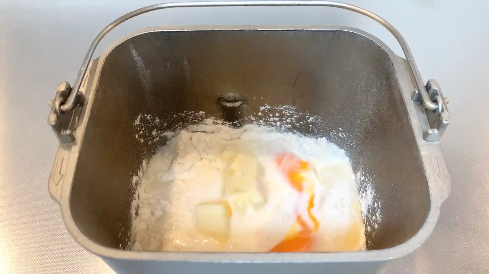
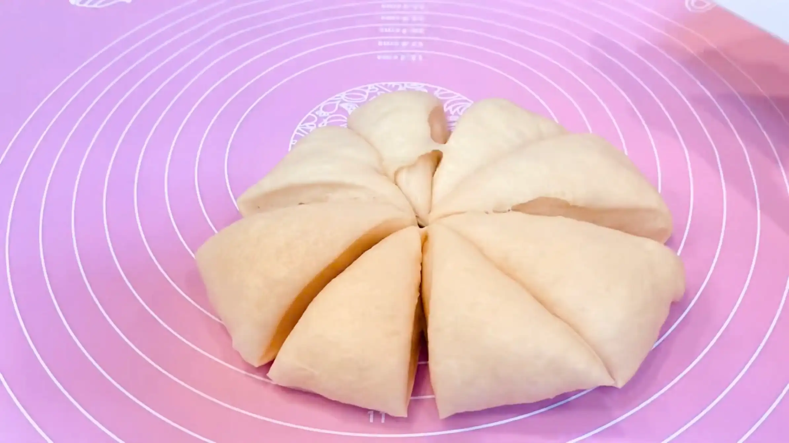
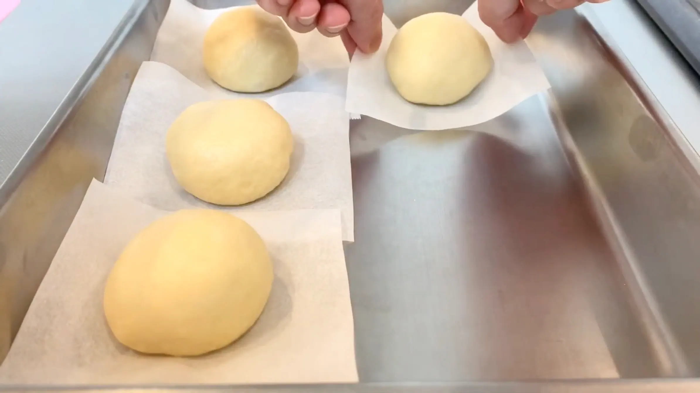
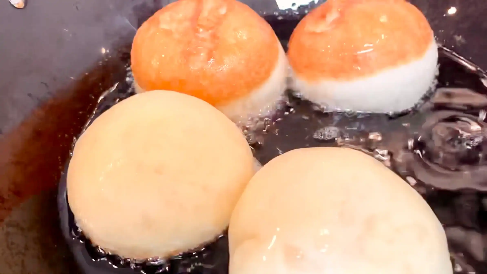
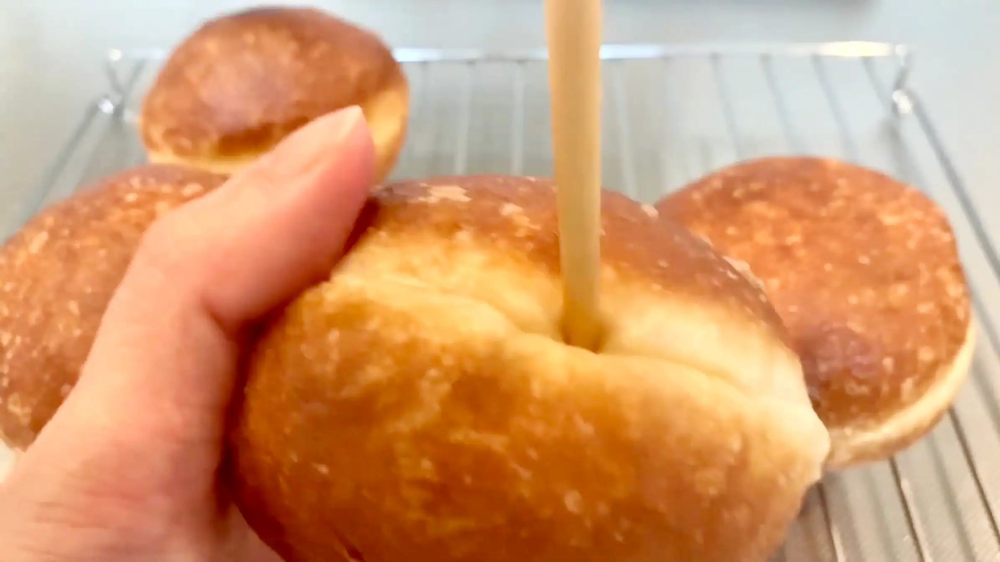
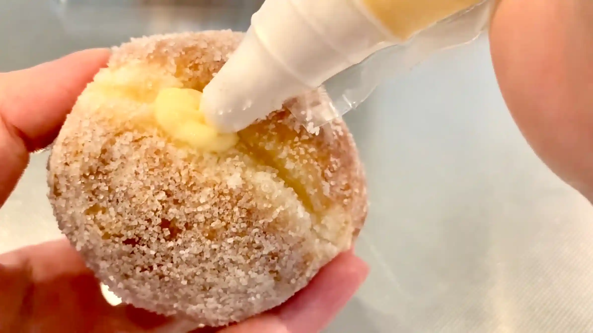
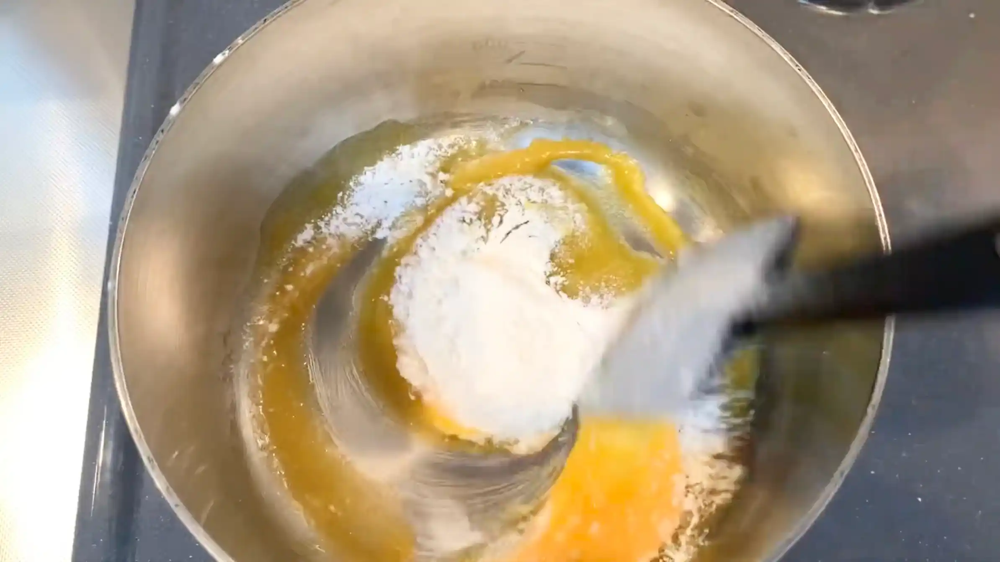
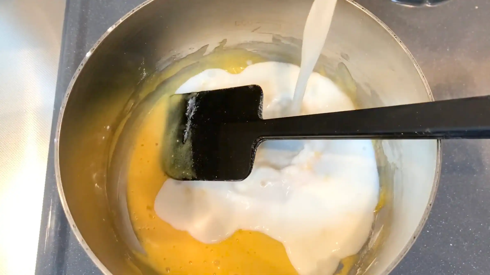
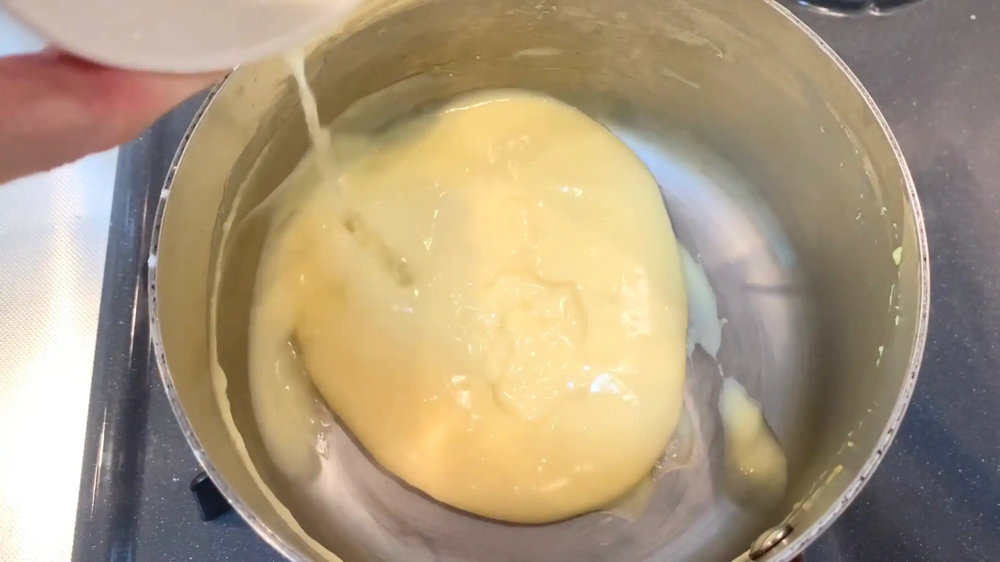
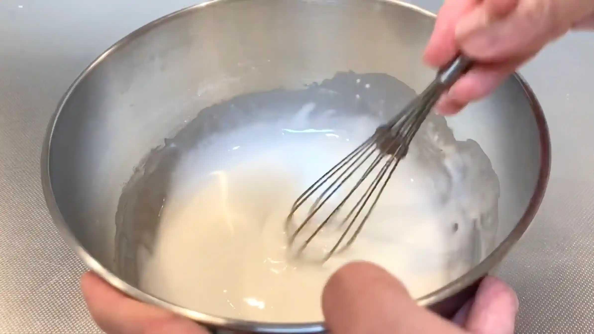

材料 8個分
※粉量を変えると自動計算されます
生地
レモンカスタードクリーム
グレーズ(お好みで)
作り方
生地
STEP 1
ホームベーカリーで生地を作る
ホームベーカリーに材料をセットして「生地コース」を選べば、生地作りから一次発酵までお任せできます。コースが終わったら、生地の状態を確認して次の工程へ進みます。
ホームベーカリーに材料をセットして「生地コース」を選べば、生地作りから一次発酵までお任せできます。コースが終わったら、生地の状態を確認して次の工程へ進みます。

STEP 2
STEP 3
生地を取り出し8等分する
生地を均等に分けることで、それぞれの大きさや発酵の進み具合をそろえやすくなります。
生地を均等に分けることで、それぞれの大きさや発酵の進み具合をそろえやすくなります。

STEP 4
生地を丸めてオーブンシートの上にのせ、ラップをして常温で50分おく
分割した生地は、表面がなめらかになるように軽く丸めておきます。そして、揚げたときにふっくらとした食感に仕上げるために、最終発酵させます。生地がひと回り大きくなるのを目安に、時間だけでなく膨らみを見て次の工程へ進みます。
分割した生地は、表面がなめらかになるように軽く丸めておきます。そして、揚げたときにふっくらとした食感に仕上げるために、最終発酵させます。生地がひと回り大きくなるのを目安に、時間だけでなく膨らみを見て次の工程へ進みます。

STEP 5
160-170℃の油で色がつくまで揚げる
油の温度が高すぎると表面だけが早く色づき、中心まで火が通りにくくなります。生地の周りに油の気泡がジワジワ出るくらいを目安に、生地を焦がさないようじっくり両面をきれいなきつね色に揚げます。
油の温度が高すぎると表面だけが早く色づき、中心まで火が通りにくくなります。生地の周りに油の気泡がジワジワ出るくらいを目安に、生地を焦がさないようじっくり両面をきれいなきつね色に揚げます。

STEP 6
お箸で穴をあける
揚げた生地にクリームを詰めるための入口を作ります。生地がつぶれないようにやさしく穴をあけ、クリームを入れやすいようお箸で中の空洞を広げます。
揚げた生地にクリームを詰めるための入口を作ります。生地がつぶれないようにやさしく穴をあけ、クリームを入れやすいようお箸で中の空洞を広げます。

STEP 7
グラニュー糖をまぶし、クリームを詰める
生地がまだ温かいうちにグラニュー糖をまぶすと、表面に砂糖がつきやすくなります。最後にレモンカスタードを詰め、クリームが全体に行き渡るように、入れる量を調整しながら仕上げます。
生地がまだ温かいうちにグラニュー糖をまぶすと、表面に砂糖がつきやすくなります。最後にレモンカスタードを詰め、クリームが全体に行き渡るように、入れる量を調整しながら仕上げます。

レモンカスタード
STEP 1
卵黄とグラニュー糖を混ぜ、ふるった小麦粉を入れて混ぜる
卵黄と砂糖をしっかり混ぜてから小麦粉を加えることで、粉がダマになりにくくなります。小麦粉はあらかじめふるっておき、全体がなめらかになるまで混ぜます。
卵黄と砂糖をしっかり混ぜてから小麦粉を加えることで、粉がダマになりにくくなります。小麦粉はあらかじめふるっておき、全体がなめらかになるまで混ぜます。

STEP 2
牛乳を加えて火にかけ、トロッとするまで混ぜる
牛乳を加えたら、鍋底や鍋の角をこするように絶えず混ぜながら加熱します。加熱が進むと徐々にとろみがついてくるので、全体がなめらかになり、しっかりとろみがついたところで火を止めます。
牛乳を加えたら、鍋底や鍋の角をこするように絶えず混ぜながら加熱します。加熱が進むと徐々にとろみがついてくるので、全体がなめらかになり、しっかりとろみがついたところで火を止めます。

STEP 3
レモン汁を加え、冷蔵庫で冷やす
火を止めてからレモン汁を加え、全体を均一に混ぜます。平らな容器に移してならし、表面にラップをぴったり密着させます。卵や牛乳を使ったクリームは傷みやすいため、粗熱が取れたら冷蔵庫に入れ、できるだけ早くしっかり冷やします。
火を止めてからレモン汁を加え、全体を均一に混ぜます。平らな容器に移してならし、表面にラップをぴったり密着させます。卵や牛乳を使ったクリームは傷みやすいため、粗熱が取れたら冷蔵庫に入れ、できるだけ早くしっかり冷やします。

グレーズ
STEP 1
粉砂糖と卵白を混ぜる
粉砂糖と卵白を混ぜ合わせ、なめらかで均一な状態にします。卵白を加えすぎるとグレーズがゆるくなるので、仕上がりの状態を見ながら少しずつ加えていくのがポイントです。
粉砂糖と卵白を混ぜ合わせ、なめらかで均一な状態にします。卵白を加えすぎるとグレーズがゆるくなるので、仕上がりの状態を見ながら少しずつ加えていくのがポイントです。

動画でチェック
おいしく作るためのワンポイントコラム
ふわっふわドーナツ生地に、暑い季節にもぴったりな絶品レモンカスタードクリームをたっぷり詰めた、イタリアのドーナツ『ボンボローニ』です！最近はカフェでもよく見かける人気のドーナツですよね。私も大好きです！理想のふわふわ生地、そしておいしいクリームを作るための3つのコツをまとめました。
① ふわふわ生地のコツ
一般的なドーナツのレシピでは、生地に薄力粉を混ぜることが多いですが、今回はあえて強力粉100%で作っています。薄力粉を混ぜた生地はサックリ感がでて、お菓子のようなおいしさを持つ生地になりますが、今回求めているのはふわふわ感。強力粉100％で作るイースト生地は、驚くほどふんわりとボリュームのある仕上がりになります。さらに、たっぷりの卵とバターを入れることでふわふわ感もアップし、リッチでほんのり甘い生地を作っています。
② 成形のコツ
生地は丸めるだけでOK！とじ目をしっかり閉じておくと、揚げ上がりが綺麗になります。道具も不要で、気軽に作れるのも嬉しいポイントですね！ちなみに、お箸で穴を開けてリング状に成形すれば、美味しいドーナツに変身します。グレーズのレシピも載せておきますので、いろんなアレンジを楽しんでください。
③ 絶品クリームのコツ
中に詰めるカスタードクリームですが、レモンを効かせて爽やかに仕上げるのもおすすめ。暑い季節などは、濃厚で甘みの強いクリームは重たく感じられがちですよね。そこで、レモンの爽やかな酸味を加えてあげると、さっぱりとした絶品クリームのできあがりです。
自分で好きなだけ、たっぷりクリームを詰めて楽しめるのも、手作りの醍醐味ですね！揚げたてのふわっふわ生地と、酸っぱいレモンカスタードの組み合わせは最高の美味しさです。ぜひおうちで味わってみてください。
① ふわふわ生地のコツ
一般的なドーナツのレシピでは、生地に薄力粉を混ぜることが多いですが、今回はあえて強力粉100%で作っています。薄力粉を混ぜた生地はサックリ感がでて、お菓子のようなおいしさを持つ生地になりますが、今回求めているのはふわふわ感。強力粉100％で作るイースト生地は、驚くほどふんわりとボリュームのある仕上がりになります。さらに、たっぷりの卵とバターを入れることでふわふわ感もアップし、リッチでほんのり甘い生地を作っています。
② 成形のコツ
生地は丸めるだけでOK！とじ目をしっかり閉じておくと、揚げ上がりが綺麗になります。道具も不要で、気軽に作れるのも嬉しいポイントですね！ちなみに、お箸で穴を開けてリング状に成形すれば、美味しいドーナツに変身します。グレーズのレシピも載せておきますので、いろんなアレンジを楽しんでください。
③ 絶品クリームのコツ
中に詰めるカスタードクリームですが、レモンを効かせて爽やかに仕上げるのもおすすめ。暑い季節などは、濃厚で甘みの強いクリームは重たく感じられがちですよね。そこで、レモンの爽やかな酸味を加えてあげると、さっぱりとした絶品クリームのできあがりです。
自分で好きなだけ、たっぷりクリームを詰めて楽しめるのも、手作りの醍醐味ですね！揚げたてのふわっふわ生地と、酸っぱいレモンカスタードの組み合わせは最高の美味しさです。ぜひおうちで味わってみてください。


イタリアのふわふわドーナツ『ボンボローニ』のレシピです！リッチなブリオッシュ生地と、爽やかなレモンカスタードクリームの相性は抜群！コラムでは「ふわふわ生地のコツ」「成形のコツ」「絶品クリームのコツ」の3つのコツをご紹介します。